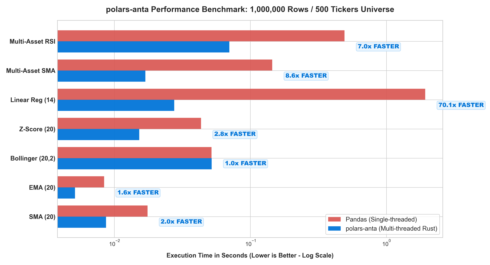

Overview
.anta / .ta interface. Zero-C deployment with Rust-accelerated performance.

.anta & .ta APIWhat is polars-anta?¶
polars-anta (Alpha & Numerical Technical Analysis) is an institutional-grade quantitative finance engine for market microstructure estimation, derivatives analytics, machine learning labeling & stationarity (AFML), cross-sectional factor engineering, statistical alpha evaluation, and execution-realistic vectorized backtesting in Python and Polars.
Purpose-built for quantitative researchers, proprietary trading desks, index futures strategists (e.g., VN30F1M, CME E-mini, Crypto Perpetuals), and systematic portfolio managers, polars-anta implements technical indicators, closed-form OLS regressions, WorldQuant 101 formulaic alphas, and portfolio evaluation tools directly as native Polars Expressions (pl.Expr).
flowchart LR
A["1. Microstructure & Roll<br/>Volume/Dollar/Imbalance Bars<br/>stitch_futures_roll • VPIN • OFI"] --> B["2. Quant ML & Stationarity<br/>Fixed-Window FracDiff (FFD)<br/>Triple-Barrier • Trend-Scanning"]
B --> C["3. Factor Orthogonalization<br/>cs_winsorize • cs_zscore<br/>neutralize • orthogonalize (OLS)"]
C --> D["4. Institutional Validation<br/>Newey-West HAC t-stat<br/>IC Decay Half-Life • PSR & DSR"]
D --> E["5. Realistic Execution<br/>Next-Open/VWAP • Vol-Targeting<br/>No-Trade Buffer • MAE/MFE Ledger"]The 4 Institutional Quantitative Pillars¶
resample_volume_bars, resample_dollar_bars, resample_imbalance_bars), stitch continuous futures contracts (stitch_futures_roll), track intraday session_vwap deviation z-scores, quantify order flow toxicity (vpin, ofi), and monitor carry & positioning (futures_basis, oi_regime).
frac_diff), generate path-dependent dynamic Triple-Barrier & Meta-Labeling targets (triple_barrier_labels), and extract multi-horizon OLS Trend-Scanning labels (trend_scanning_labels).
cs_winsorize via Quantile/Z-Score/MAD), sector-neutralize (neutralize), strip multi-factor risk exposures via Modified Gram-Schmidt OLS projection (orthogonalize), and validate with Newey-West HAC t-statistics (ic_summary), Alpha Half-Life (ic_decay), and Deflated Sharpe Ratios (deflated_sharpe_ratio).
execution_price="open"), enforce mandatory intraday EOD/roll session flatten masks (flat_mask), apply ex-ante volatility targeting (vol_target) and hysteresis turnover buffers (no_trade_buffer), and audit round-trip MAE/MFE trade ledgers (bt.trades()).
Interactive Quantitative Workflows¶
Install polars-anta in seconds with zero C compiler requirements:
Explore how polars-anta unifies derivatives microstructure, AFML feature engineering, cross-sectional factor orthogonalization, and realistic backtesting into fluent Polars pipelines:
import polars as pl
import polars_anta as pa # Registers .anta and .ta namespaces
# 1. Stitch continuous futures contracts (backward/ratio/panama) & sample Volume bars:
cont_df = raw_contracts.anta.stitch_futures_roll(method="backward")
vol_bars = cont_df.anta.resample_volume_bars(volume_threshold=5_000)
# 2. Extract Session-Anchored VWAP, Order Flow Toxicity (VPIN, OFI), Carry & OI Regimes:
deriv_features = vol_bars.with_columns(
pl.col("close")
.anta.session_vwap("high", "low", "volume", session_by="trading_date")
.alias("svwap"),
pl.col("close").anta.vpin("volume", period=20).alias("vpin_20"),
pl.col("bid_price").anta.ofi("bid_size", "ask_price", "ask_size", period=5).alias("ofi_5"),
pl.col("close").anta.futures_basis("spot_close", "days_to_expiry", period=20).alias("basis"),
pl.col("close").anta.oi_regime("open_interest", period=1).alias("oi_state"),
).unnest("svwap", "basis", "oi_state")
# Memory-preserving stationary features (FFD) + Triple-Barrier & Trend-Scanning labels:
ml_dataset = df.with_columns(
pl.col("close").anta.frac_diff(d=0.4, window=20).over("symbol").alias("close_ffd"),
pl.col("close")
.anta.triple_barrier_labels(
volatility=pl.col("close").pct_change().rolling_std(20),
horizon=12,
pt_mult=2.0,
sl_mult=1.5,
side=pl.col("primary_signal"), # Enables binary meta_label {0.0, 1.0}
)
.over("symbol")
.alias("tb"),
pl.col("close")
.anta.trend_scanning_labels(min_window=5, max_window=20)
.over("symbol")
.alias("ts"),
).unnest("tb", "ts")
alpha_df = panel_df.with_columns(
(
-pl.col("close").anta.ts_delta(5).over("symbol")
* pl.col("volume").anta.ts_rank(20).over("symbol")
).alias("raw_alpha")
).with_columns(
pl.col("raw_alpha")
.anta.cs_winsorize(over="date", method="mad", threshold=3.0)
.anta.cs_zscore(over="date", clip_bound=3.0)
.anta.neutralize(by="sector", over="date", standardize=True)
# Modified Gram-Schmidt OLS projection orthogonal to Beta, Size & Volatility:
.anta.orthogonalize(factors=["mkt_beta", "log_mcap", "vol_20"], over="date", standardize=True)
.anta.ts_scale(a=1.0, over="date")
.alias("pure_alpha_weight")
)
# 1. Autocorrelation-robust Newey-West HAC IC & Multi-Horizon Alpha Half-Life:
eval_df = alpha_df.anta.forward_returns(periods=(1, 5, 10), group_by="symbol")
ic_stats = eval_df.anta.ic_summary("pure_alpha_weight", "fwd_ret_5", group_by="date", nw_lags=5)
decay_table = eval_df.anta.ic_decay(
"pure_alpha_weight", horizons=(1, 2, 3, 5, 10, 20), group_by="date"
)
# 2. Execution-realistic vectorized backtest with MAE/MFE excursion ledger:
bt = (
df.anta.ema(12, alias="ema_12")
.anta.ema(26, alias="ema_26")
.anta.backtest(
entries=pl.col("ema_12").anta.crosses_above("ema_26"),
exits=pl.col("ema_12").anta.crosses_below("ema_26"),
execution_price="open", # Fill at next-bar open price
flat_mask=pl.col("is_eod"), # Force flat before ATC / overnight
vol_target=0.15, # 15% annualized volatility target
no_trade_buffer=0.05, # Suppress micro-rebalancing turnover
fee_rate=0.0005,
slippage_rate=0.0002,
)
)
print(bt.report())
print(bt.trades()) # Round-trip trade ledger with PnL, holding_bars, MAE & MFE!
Core Mathematical & Systems Foundations¶
Rather than iterating row-by-row in Python or opaque Cython loops, polars-anta reduces time-series regressions, fractional operators, and cross-sectional projections into closed-form algebraic identities compiled directly by Polars' Rust query engine:
1. Rolling OLS Slope via Exact WMA–SMA Algebraic Identity¶
By exploiting the exact linear identity between the Linearly Weighted Moving Average (\(\text{WMA}_n\)) and Simple Moving Average (\(\text{SMA}_n\)), rolling Ordinary Least Squares slope (\(\beta_{1,t}\)) and intercept (\(\beta_{0,t}\)) are evaluated in \(O(1)\) complexity per bar (112.4x faster than Pandas):
2. Fixed-Window Fractional Differentiation (FFD)¶
Applies the binomial expansion of the backshift operator \((1 - B)^d\) over a fixed horizon \(W\) to achieve statistical stationarity while preserving long-memory cointegration at fractional order \(d \in (0, 1)\):
3. Modified Gram-Schmidt Cross-Sectional Orthogonalization¶
Applies the Frisch-Waugh-Lovell theorem per timestamp cross-section to strip collinear risk exposures \(F = [f_1, \dots, f_K]\) via sequential ridge-stabilized orthogonal projections:
4. Newey-West HAC Inference & Deflated Sharpe Ratio (DSR)¶
Corrects Rank IC \(t\)-statistics for overlapping forward-return serial correlation via Bartlett kernel variance \(\hat{\Omega}_{\text{NW}}\), and adjusts backtest Sharpe ratios for skewness (\(\hat{\gamma}_3\)), fat tails (\(\hat{\gamma}_4\)), and multiple testing across \(K\) trials:
1,000,000-Row Performance Benchmark¶

Measured across 1,000,000 bars (single-asset random walk) and a 500 tickers × 2,000 bars panel (1,000,000 rows) on Polars' multi-threaded Rust engine vs. single-threaded Pandas:
| Operation / Indicator | Dataset Scale | Pandas Execution | polars-anta Execution |
Measured Speedup |
|---|---|---|---|---|
| Linear Regression Slope (OLS) | 1,000,000 bars | 2.3529 s | 0.0209 s | 112.4x Faster |
| Multi-Asset RSI (14) | 500 tickers × 2k bars | 0.4398 s | 0.0545 s | 8.1x Faster |
| Multi-Asset SMA (20) | 500 tickers × 2k bars | 0.1345 s | 0.0168 s | 8.0x Faster |
| Z-Score Normalization | 1,000,000 bars | 0.0450 s | 0.0267 s | 1.7x Faster |
| Exponential Moving Average | 1,000,000 bars | 0.0100 s | 0.0069 s | 1.5x Faster |
| Simple Moving Average | 1,000,000 bars | 0.0170 s | 0.0153 s | 1.1x Faster |
Documentation and Learning Resources¶
| Resource | Description |
|---|---|
| Quantitative Theory & Institutional Workflows | Deep-dive into the mathematics and theory of AFML labeling, FFD, microstructure bars, Gram-Schmidt orthogonalization, Newey-West HAC, and PSR/DSR |
| Architecture & Mathematical Proofs | Step-by-step algebraic proofs of the WMA–SMA OLS identity, Wilder RMA recurrences, and zero-copy sliding_window_view vectorization |
| API Reference & Catalog | Complete module-by-module function signatures, pl.Struct fields, and mathematical formulas across 155+ primitives |
| Getting Started Guide | Installation, expression syntax, pl.Struct unnesting, and fluent DataFrame chaining |
| Multi-Asset Universe Guide | Scaling indicators and cross-sectional factors across hundreds of symbols with .over("ticker") |
| Information Bars, Roll & Resampling | Calendar/Volume/Dollar/Imbalance bars, continuous futures stitching (stitch_futures_roll), and OHLCV validation |
| Factor Evaluation & Backtesting | Rank IC, Newey-West ICIR, ic_decay, Triple-Barrier/Trend-Scanning, df.anta.backtest(), and MAE/MFE trade ledgers |
| Performance Benchmarks | 1,000,000-row latency comparisons against Pandas and reproduction instructions |
| Interactive Colab Notebooks | Runnable Jupyter / Google Colab tutorials covering screening, momentum, and backtesting |